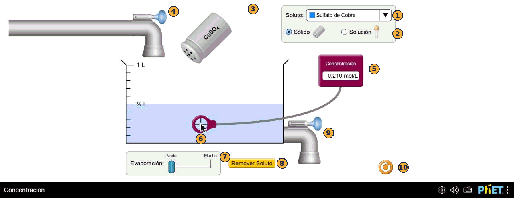
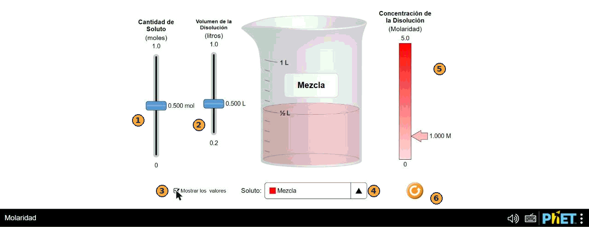

Objetivo y competencias
Objetivo: determinar cómo cambia la concentración de una solución cuando cambias la cantidad de soluto o de solvente, y calcular su molaridad, con los simuladores Concentración y Molaridad de PhET.
Tiempo: 1 hora 30 minutos. Trabajo: en parejas.
Materiales: computador o celular con internet, cuaderno de laboratorio y calculadora.
| Saber | Hacer | Ser |
|---|---|---|
| Define concentración, molaridad y solución saturada; relaciona n, V y M. | Prepara soluciones virtuales, mide su concentración y calcula moles y masa de soluto. | Registra sus datos con honestidad y trabaja en equipo. |
Para entender: ¿cómo se expresa la concentración?
La concentración dice cuánto soluto hay por cada cantidad de solución. Dos vasos pueden tener el mismo soluto y verse parecidos, pero uno tener mucho más soluto que el otro. Por eso necesitamos medir. Se puede expresar de varias formas, según para qué se use:
| Forma de expresarla | Fórmula | Ejemplo de la vida diaria |
|---|---|---|
| Porcentaje masa/volumen (% m/v) | g de soluto en 100 mL de solución | Suero fisiológico: 0,9 % m/v, o sea 0,9 g de NaCl en 100 mL |
| Porcentaje volumen/volumen (% v/v) | mL de soluto en 100 mL de solución | Alcohol antiséptico al 70 % v/v: 70 mL de alcohol en 100 mL |
| Gramos por litro (g/L) | masa de soluto / litros de solución | El suero fisiológico equivale a 9 g/L |
| Partes por millón (ppm) | mg de soluto por litro de solución (agua diluida) | Contaminantes en agua de consumo |
| Molaridad (M) | M = n / V, en mol/L | 5,85 g de NaCl en 500 mL: n = 0,100 mol y M = 0,200 mol/L |
En química la más usada es la molaridad, porque cuenta partículas (moles), no gramos. Para pasar de gramos a moles usamos la masa molar (Mr): n = m / Mr. Valores que usaremos: NaCl = 58,44 g/mol; CuSO4 = 159,61 g/mol; KMnO4 = 158,03 g/mol.

Ejemplos resueltos
Ejemplo 1 (de gramos a molaridad). Se disuelven 11,7 g de NaCl en agua hasta completar 500 mL. n = 11,7 g / 58,44 g/mol = 0,200 mol; V = 0,500 L; M = 0,200 / 0,500 = 0,400 mol/L.
Ejemplo 2 (de molaridad a gramos). ¿Cuántos gramos de CuSO4 hay en 250 mL de solución 0,20 M? n = M·V = 0,20 × 0,250 = 0,050 mol; m = n·Mr = 0,050 × 159,61 = 7,98 g.
Ejemplo 3 (del % al mol/L). El suero fisiológico tiene 0,9 g de NaCl por 100 mL, es decir 9 g/L. Como 9 g / 58,44 g/mol = 0,154 mol, su concentración es 0,154 mol/L.
Errores frecuentes: (1) confundir el volumen del solvente con el de la solución (la molaridad usa el volumen final); (2) usar mL en lugar de litros en M = n/V; (3) olvidar la unidad en el resultado.
Conoce la herramienta: PhET Concentración
Abrir en una pestaña nueva: Simulación Concentración (PhET) (úsalo si el simulador incrustado no carga o si trabajas desde el celular).

| N.º | Control | Para qué sirve |
|---|---|---|
| 1 | Soluto | Menú desplegable con nueve solutos: Mezcla, nitrato de cobalto (II), cloruro de cobalto, dicromato de potasio, cromato de potasio, cloruro de níquel (II), sulfato de cobre, permanganato de potasio y cloruro de sodio. |
| 2 | Sólido / Solución | Elige cómo agregas el soluto: con el salero (sólido) o con el gotero (una solución ya preparada). |
| 3 | Salero | Arrástralo y muévelo de lado a lado sobre el vaso para que caigan cristales de soluto. |
| 4 | Grifo de agua | El grifo de arriba agrega agua pura al vaso. Girar la llave abre o cierra el flujo. |
| 5 | Medidor de concentración | Muestra la concentración en mol/L cuando la sonda está dentro del líquido. |
| 6 | Sonda | Arrástrala dentro del líquido para medir. Fuera del agua el medidor muestra una raya. |
| 7 | Evaporación | Deslizador de «Nada» a «Mucho»: quita solvente y deja el soluto, por eso sube la concentración. |
| 8 | Remover Soluto | Quita todo el soluto del vaso y deja solo agua. |
| 9 | Grifo de salida | Saca líquido del vaso (también sale soluto disuelto). |
| 10 | Reiniciar (⟲) | Devuelve la simulación a su estado inicial. |
El vaso tiene una capacidad de 1 L y comienza con 0,5 L de agua. En una prueba con sulfato de cobre y 0,5 L de agua, el medidor marcó 0,210 mol/L.
Simulación «Concentración»: PhET Interactive Simulations, Universidad de Colorado Boulder, licencia CC BY 4.0. Ver la página de la simulación
Predice antes de experimentar
Escribe en tu cuaderno tus respuestas. Aún no abras el simulador.
Preguntas previas
- Si agregas más soluto a un vaso con agua, ¿la concentración sube, baja o no cambia? ¿Por qué?
- Si agregas más agua a la solución sin añadir soluto, ¿qué le pasa a la concentración?
- Si dejas que se evapore agua de la solución, ¿qué le pasa a la concentración? ¿Y a la cantidad de soluto?
- ¿Crees que se puede seguir disolviendo soluto para siempre? ¿Qué pasaría?
Actividad 1: agrega soluto
Abrir en una pestaña nueva: Simulación Concentración (PhET) (úsalo si el simulador incrustado no carga o si trabajas desde el celular).
Meta: ver cómo cambia la concentración cuando aumenta la cantidad de soluto y el volumen se mantiene en 0,5 L.
- Abre la simulación. En el menú Soluto elige Sulfato de Cobre (es azul, se ve bien) y deja marcado Sólido.
- Arrastra la sonda hasta el agua. El medidor debe marcar 0,000 mol/L (agua pura). Anota el volumen: 0,5 L.
- Agarra el salero y muévelo de lado a lado sobre el vaso durante unos segundos. Suelta y lee el medidor. Anota el valor.
- Repite el paso 3 al menos seis veces, anotando cada vez el valor del medidor.
- Calcula para cada medición los moles de soluto con n = M × V, y la masa con m = n × Mr (Mr CuSO4 = 159,61 g/mol).
Responde mientras trabajas
- ¿Qué pasa con el color del líquido cuando aumenta la concentración?
- ¿Cuántos mol/L subió la concentración, en promedio, en cada tanda de soluto?
- Si el volumen no cambia, ¿qué relación observas entre la cantidad de soluto y la concentración?
Tabla de registro
| Medición | Volumen (L) | Concentración leída (mol/L) | Moles n = M·V | Masa m = n·Mr (g) |
|---|---|---|---|---|
Actividad 2: agrega agua y evapora
Meta: descubrir qué pasa con la concentración cuando cambia el volumen y la cantidad de soluto se mantiene.
- Con la solución de la actividad 1, anota la concentración inicial (C1) y el volumen (V1, mira la escala del vaso).
- Predice en tu cuaderno cuál será la concentración si duplicas el volumen agregando agua. Usa C2 = C1 × V1 / V2.
- Abre el grifo de agua de arriba hasta completar 1 L. Cierra el grifo y lee el medidor. ¿Coincide con tu predicción?
- Ahora mueve el deslizador de Evaporación hacia «Mucho». Observa cómo baja el nivel del agua y cómo cambia la concentración. Regresa el deslizador a «Nada».
- Abre el grifo de salida unos segundos. ¿Qué pasa con la concentración? ¿Y con el volumen? (Pista: sale agua con soluto disuelto).
Responde mientras trabajas
- ¿Se cumplió tu predicción? Si no, ¿qué creías que iba a pasar?
- Al agregar agua, ¿cambió la cantidad de soluto (los moles)? ¿Por qué?
- Al evaporar agua, ¿cambió la cantidad de soluto? ¿Qué cambió entonces?
- ¿Por qué la concentración no cambia al sacar solución por el grifo de salida?
Tabla de registro
| Condición | Volumen (L) | Concentración leída (mol/L) | Concentración predicha (mol/L) | Observación |
|---|---|---|---|---|
Actividad 3: llega hasta la saturación
Meta: reconocer una solución saturada y comparar solutos.
- Pulsa Remover Soluto para volver a agua pura. Elige Cloruro de Sodio y vuelve a agregar soluto con el salero hasta que ya no se disuelva y veas cristales en el fondo.
- Lee la concentración en ese momento. Esa es la concentración de saturación. Anótala.
- Repite con otro soluto (por ejemplo, Sulfato de Cobre y Permanganato de Potasio). Anota cada concentración de saturación.
- Con una solución saturada, mueve el deslizador de Evaporación hacia «Mucho» y observa qué ocurre con el sólido del fondo.
Responde mientras trabajas
- ¿Qué soluto se disuelve más antes de saturarse? ¿Cuál menos?
- ¿Qué ves en el fondo cuando la solución ya está saturada?
- Al evaporar agua de una solución saturada, ¿qué pasa con el sólido del fondo? ¿Por qué?
Tabla de registro
| Soluto | Concentración de saturación (mol/L) | Masa disuelta (g) = M·V·Mr | Observación |
|---|---|---|---|
Actividad 4: la molaridad como relación n / V
Abrir en una pestaña nueva: Simulación Molaridad (PhET) (úsalo si el simulador incrustado no carga o si trabajas desde el celular).

| N.º | Control | Para qué sirve |
|---|---|---|
| 1 | Cantidad de soluto (moles) | Deslizador de 0 a 1,0 mol. |
| 2 | Volumen de la disolución (litros) | Deslizador de 0,2 a 1,0 L. |
| 3 | Mostrar los valores | Casilla que muestra los números de moles, litros y molaridad. |
| 4 | Soluto | Menú para cambiar el color y el tipo de soluto. |
| 5 | Concentración de la disolución (molaridad) | Barra de 0 a 5,0 M con una flecha que marca la concentración actual. |
| 6 | Reiniciar (⟲) | Vuelve a los valores iniciales (0,500 mol y 0,500 L). |
Meta: comprobar que M = n / V.
- Activa Mostrar los valores.
- Para cada fila de la tabla, calcula primero la molaridad con M = n / V y escríbela en la columna «Predicha». Luego mueve los deslizadores lo más cerca posible de los valores pedidos y anota la molaridad que muestra la flecha.
- Responde las preguntas.
| n (mol) | V (L) | M predicha (mol/L) | M leída (mol/L) |
|---|---|---|---|
| 0,200 | 0,500 | ||
| 0,500 | 0,250 | ||
| 1,00 | 0,200 | ||
| 0,300 | 1,00 | ||
| 0,500 | 0,500 |
Responde
- ¿Coincidieron tus predicciones con lo que mostró la simulación? Explica las diferencias, si hubo.
- ¿Qué pasa con la molaridad si duplicas los moles y mantienes el volumen? ¿Y si duplicas el volumen y mantienes los moles?
- ¿Cuál es la mayor molaridad que se puede alcanzar con estos deslizadores? ¿Con qué valores de n y V?
- Si cambias el soluto (por ejemplo, de «Mezcla» a otro), ¿cambia la molaridad? ¿Por qué?
Simulaciones incrustadas
Simulación «Concentración»: PhET Interactive Simulations, Universidad de Colorado Boulder, licencia CC BY 4.0. Ver la página de la simulación
Simulación «Molaridad»: PhET Interactive Simulations, Universidad de Colorado Boulder, licencia CC BY 4.0. Ver la página de la simulación
Analiza y resuelve
Responde en tu cuaderno y luego revisa las respuestas orientadoras con el botón.
Preguntas de análisis
- ¿Qué relación encontraste entre la cantidad de soluto y la concentración? ¿Y entre el volumen y la concentración?
- Una solución tiene 0,50 mol de soluto en 2,0 L. ¿Cuál es su molaridad?
- ¿Cuántos gramos de NaCl hay en 250 mL de una solución 0,20 M? (Mr NaCl = 58,44 g/mol)
- Se disuelven 4,0 g de NaOH (Mr = 40 g/mol) en agua hasta completar 500 mL. ¿Cuál es la molaridad?
- Una solución de CuSO4 tiene 0,210 mol/L y un volumen de 0,5 L. ¿Cuántos gramos de soluto contiene? (Mr = 159,61 g/mol)
- ¿Por qué el volumen que importa en M = n/V es el de la solución y no el del agua que agregaste?
- Compara lo que predijiste al comienzo con lo que observaste. ¿En qué te equivocaste? ¿Por qué crees que pasó?
- Más soluto con el mismo volumen → concentración mayor (directamente proporcional). Más volumen con la misma cantidad de soluto → concentración menor (inversamente proporcional).
- M = n / V = 0,50 mol / 2,0 L = 0,25 mol/L.
- n = M × V = 0,20 mol/L × 0,250 L = 0,050 mol. Masa = 0,050 mol × 58,44 g/mol ≈ 2,92 g.
- n = 4,0 g / 40 g/mol = 0,10 mol; V = 0,500 L; M = 0,10 / 0,500 = 0,20 mol/L.
- n = 0,210 × 0,5 = 0,105 mol; m = 0,105 × 159,61 ≈ 16,8 g.
- Porque el soluto ocupa espacio y se mezcla con el solvente: el volumen total de la solución puede ser distinto de la suma de los volúmenes iniciales. Por eso se usa un matraz aforado y se completa hasta la marca.
- Respuesta personal. Una buena respuesta compara la predicción con los datos y propone una explicación basada en n y V.
Verifica lo aprendido
Quiz: concentración
Elige la respuesta correcta. Puedes repetir el quiz.
Decide si cada afirmación es verdadera o falsa.
00:00:
Cierra y reflexiona
Responde en tu cuaderno, en dos o tres líneas cada una:
- ¿Qué fue lo más difícil de esta práctica? ¿Cómo lo resolviste?
- ¿Dónde podrías usar el concepto de concentración en tu vida diaria o en tu comunidad?
- ¿Qué te gustaría comprobar en un laboratorio real después de lo que viste en el simulador?